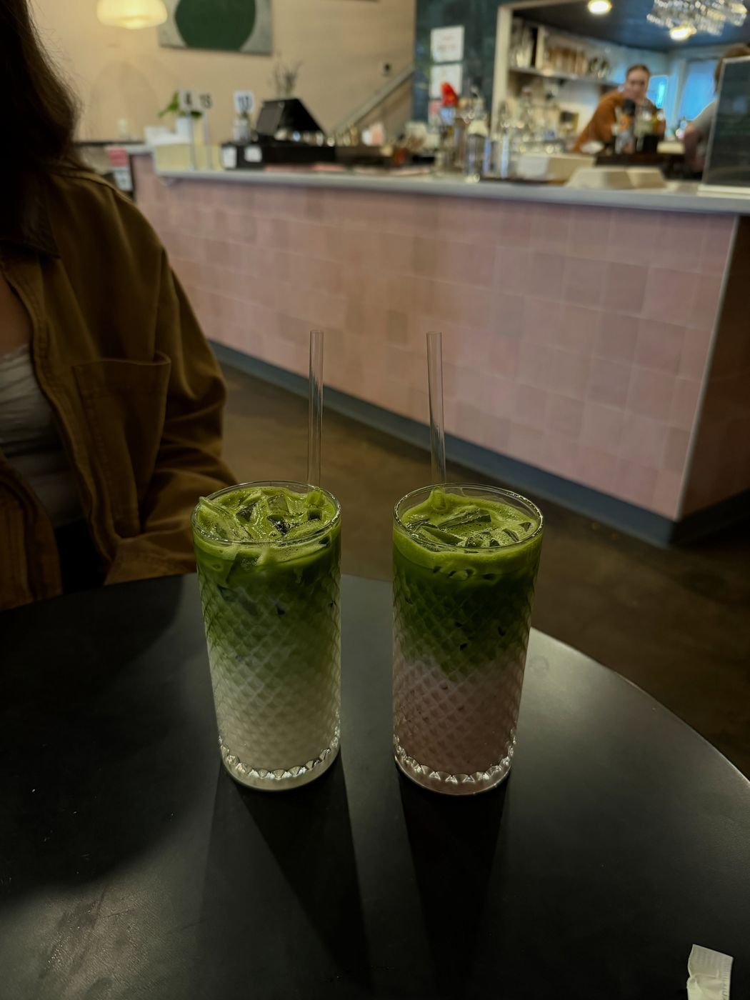
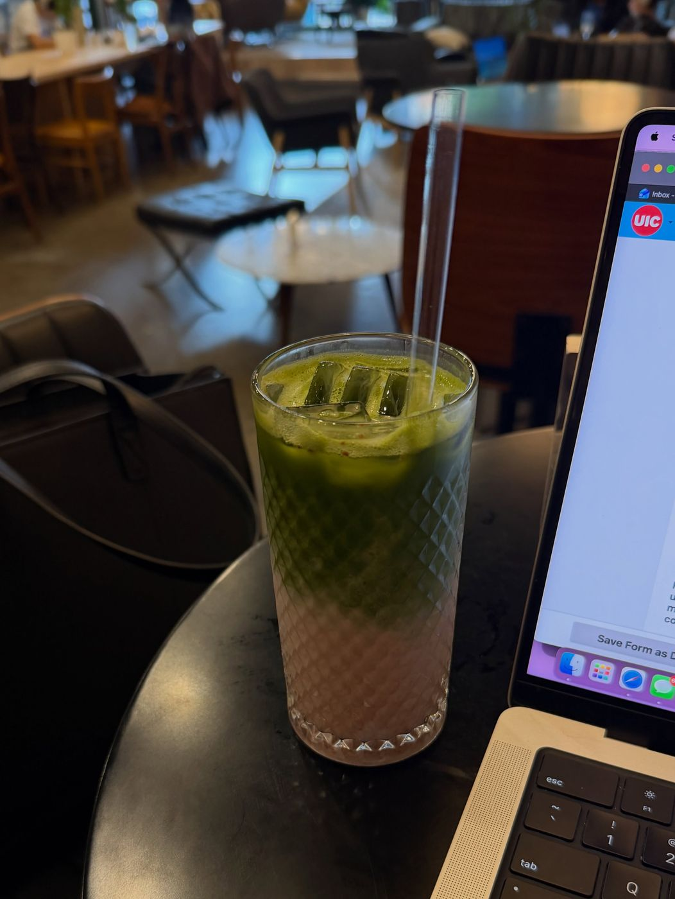
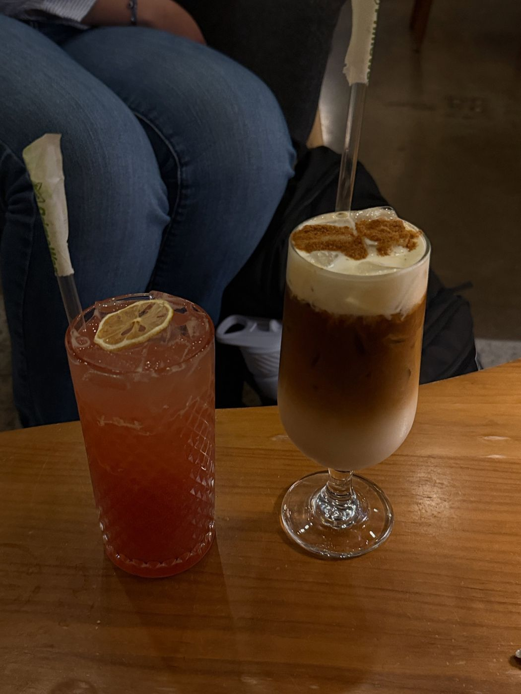

Elixir Dessert & Bar in the U District



Lowkey overpriced, but the best spot in the area to study. The matcha was good, as expected, since this spot is the Grean cafe in the mornings. Coffee and other drinks were good too, but expensive.
what i got: matcha
see this spot on the map